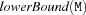
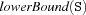
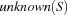

7.9 Distribution
Given a set M, let  and  denote the greatest lower bound and the least upper bound currently known for M. Also define
denote the greatest lower bound and the least upper bound currently known for M. Also define  .
.
-
distribute {FS.distribute +Dist *Ms}The vector
Msis distributed according to the specificationDist. The following values forDistare supported:naiveis equivalent togeneric, i. e. the default settings apply.generic(order: +Order <= order
filter: +Filter <= true
select: +Select <= id
element: +Element <= element
rrobin: +RRobin <= false
weights: +Weights <= {FS.makeWeights nil}
procedure:+Proc <= proc {$} skip end)Ordernaiveselects the left-most variable.order(sel: +Sel <= min
cost: +Cost <= card
comp: +Comp <= unknown)Sel = minselects the left-most variableSfromSswith the minimal cost according toCost.Sel = maxselects the left-most variableSfromSswith the maximal cost according toCost.Cost = card: The cost is the cardinality of the set determined byComp.Cost = weightSum: The cost is the sum of the weights associated with the elements of the set determined byComp.Cost = weightMin: The cost is the minimal weight determined byComp.Cost = weightMax: The cost is the maximal weight associated with an element of the set determined byComp.Comp = unknownselects .
. Comp = lowerBoundselects .Comp = upperBoundselects .
.
fun {Order +Ss} ... end
Filterdetermines if an elementSofSsis choosen for distribution. That is the case if{IsDet S} and the filter yieldstrue.trueskips values inSs.fun {Filter +E} ... end
Selectis used to access the actual finite set variable. Self-defined functions resp. procedures have to apply an appropriate selection function by themselves.idis the identity function.fun {Select +E} ... end
Elementelement(sel: +Sel <= min
wrt: +Wrt <= unknown)Sel = minselects the minimal element with respect toWrt.Sel = maxselects the maximal element with respect toWrt.Wrt = unknownchooses an element from . and interprets it as an integer.Wrt = weightchooses an element from and takes its weight as selection criterion.
fun {Element +E} ... end
RRobintruecauses the distribution to step through the variable list in a round-robin fashion.falsecauses the distribution to completely enumerate the head of the variable list and then proceeds with the head of the tail of the variable list.
Weightsmust be a list of the form[E#W ...]. The variableEdenotes an element andWthe element's weight. An list element of the formdefault#Wassigns to all not explicitely mentioned elements the weightW. If there is no elementdefault#Wthendefault#0is implicitely added.Procis applied when stability is reached. Since this application may cause instability, distribution is continued when stability is reached again.